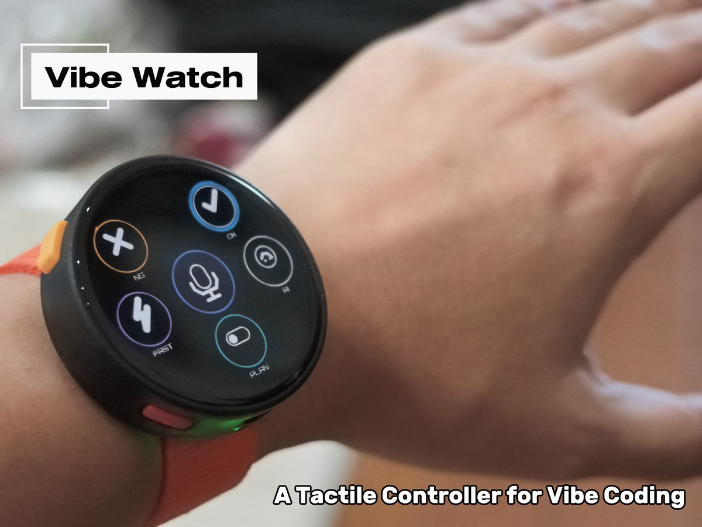
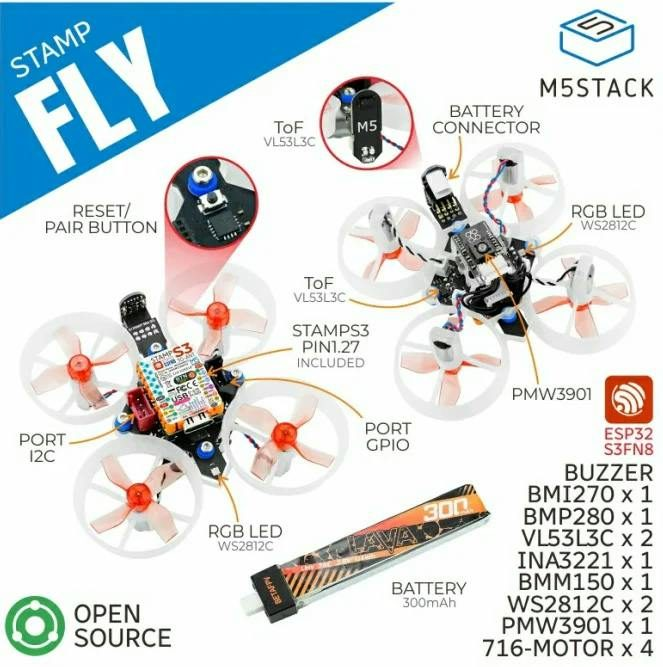

作ってみた、
38年分。
GOROman（Yoshihito Kondoh）の作品集です。小学生のファミコン改造から Vibe Watch まで、作ったものを時系列で並べました。そのまま下へ、1枚ずつ読み進められます。
止まらない年表 — 1枚ずつ、38年分
作品は1枚ずつのカードで並んでいます。画面下のボタンで次の作品へジャンプできます。そのまま下へ、のんびり読み進めてください。
「作ってみた」ストリーム
X の全アーカイブ（2007〜2026年・665,121件）を走査し、「作ってみた」「やってみた」「つくった」「作った」「作りました」など、本人が自分の制作を完了形で報告したポストを年別に並べました。掲載数の数え方は次のとおりです。全アーカイブの実測では、完了形のポストはリツイートを除いて794件が上限でした。そこからキーワード抽出と下記の除外規則で絞り込み、さらに「3Dプリンタ」「3Dプリント」を含むポストから、具体的に何をプリントしたか分かるものも同じ基準で発掘して加えた件と、別途厳選した件を統合し、両方に含まれる重複件を除いた全件が、このストリームの掲載数です。794件すべてを載せているわけではありません。除外規則は、リツイートと引用、記事や他人の動画の共有、「やってみたい」「作りたかった」といった願望表現、他人が作り手のポスト、伝聞と仮定、失敗・未完了の報告、登録や認証といった手続きだけのポスト、対象が特定できない短文、文脈のない返信や「昔作った」といった曖昧な言及だけのポスト、そして他人へのメンションで始まる返信ポストです。各ポストには通し番号とパーマネントリンク、内容に合うタグ（VR、Drone、Synthesizer、電子工作、3Dプリンタ、Famicom、PlayStation、Chromatic、FPGA、Oscilloscope、VST、FAX など）が付いていて、タグを押すと同じタグのポストに絞り込めます。アイコンは年代ごとの当時のものを使い、写真はアーカイブに残っていたものを付けています。2021年はアーカイブ自体に欠落があり、この条件に合うポストが残っていません。スクロールに合わせて少しずつ読み込むので、そのまま下へ読み進められます。各カードから元のポストを開けます。
最後まで読みました
ここまでが年表の全部です。年表の上にある検索と時代タグから、気になる作品を探せます。
検索とタグへ（年表の上部）プロフィール
GOROman（Yoshihito Kondoh）／ 別名「ナル先生」
株式会社エクシヴィ（XVI Inc.）Founder CEO
ものづくりのルーツは小学生のときです。『バックアップ活用テクニック』を読んでファミコンを改造したのが始まりでした。中学1年でパソコン通信を始め、1988年にはホストプログラムを自作してホスト局「GORO-NET」を開局しました。
2013年には Oculus Rift DK1 向けに 「Mikulus」 を公開しました。Mikulus は VRクリエイティブアワード2017で個人部門最優秀賞を受賞しています。著書に『ミライのつくり方 2020-2045 僕がVRに賭けるわけ』（西田宗千佳との共著、2018年）などがあります。
今は、M5Stack や基板、ドローン、3Dプリンタと AI エージェントを組み合わせたものづくりに取り組んでいます。
自己紹介
小学生のときに『バックアップ活用テクニック』を読んでファミコンを改造したのが、ものづくりの始まりです。中学1年で始めたパソコン通信の時代から、VR、ドローン、AI エージェントまで、新しい技術が出るたびにまず自分で作って確かめてきました。個人で作った「Mikulus」は、VR のワークスペースや OS の原型として評価されました。XVI では、バーチャルプロダクションの仕組みである AniCast などを作りました。最近は、M5Stack を中心とした小さなハードウェアと LLM を組み合わせ、AI と一緒に作ること自体を作品にしています。
受賞歴
出典を確認できた受賞だけを載せています。
インタビュー記事
本人がインタビューや対談で登場した記事のうち、実在を確認できたものだけを載せています。
- ASCII.jp（2014年2月）アイドルと仮想旅行に行ける!? “オキュ旅”に刮目せよOculus Rift 初期の企画「オキュ旅」を取り上げたインタビュー。
- インサイド（2017年）VRの伝道師、GOROmanこと株式会社エクシヴィ代表取締役社長 近藤義仁氏が語る、国内におけるVR向けHMDムーブメントのこれまでとこれからMikulus や MikuMikuAkushu の頃のインタビュー。作品「Mikulus」からもリンクしています。
- Audible（音声インタビュー・2018年）GOROman、VRの未来を語る — 高木利弘スペシャルインタビュー文字記事ではなく音声で聴くインタビュー。GOROman 誕生の経緯や、ペーパー・パラダイムから空間パラダイムへの転換、VR の今後の展望を語っています。
- 電ファミニコゲーマー（2018年）川上量生×GOROman 対談パソコン通信時代からの歩みを語る対談。作品「GORO-NET／GORO-NET2」からもリンクしています。
- エイベックス公式（2018年11月19日）AniCast Lab. インタビュー #1エイベックスと共同で設立した AniCast Lab. についての公式インタビュー（連載1回目）。
- エイベックス公式（2018年11月30日）AniCast Lab. インタビュー #2AniCast Lab. 公式インタビューの2回目。
- AREA JAPAN（Autodesk）（2019年1月22日）連載「3DCGの未来 〜CGアニメとメディアリレーション〜」第2回：近藤 義仁 氏（GOROman／株式会社エクシヴィ代表取締役社長 VRエヴァンジェリスト）聞き手は東映アニメーションの野口光一氏。VR に魅せられて会社を副社長に任せた経緯から、Oculus Japan 立ち上げ、AniCast までを語っています。
- ITmedia PC USER（2019年9月2日）“VRのご意見番”GOROman氏に聞く「まずはSlack、その先で生きるVR会議」VR 会議やテレイグジステンス登壇の実践について聞くインタビュー。まずは Slack など非同期の仕組み、その先に VR 会議があるという考え方を語っています。
- AV Watch（2019年12月9日）VRベンチャーとavexが組む「AniCast Maker」の狙いVR ベンチャーの XVI とエイベックスが組んだ「AniCast Maker」の狙いを聞く記事。
- CGWORLD（2020年11月）近藤“GOROman”義仁氏に聞くOculus Quest 2発売の意味Oculus Quest 2 発売の意味について聞くインタビュー。
- Mogura VR News（2020年12月10日）ソニーの空間再現ディスプレイ「ELF-SR1」誕生秘話ソニーの空間再現ディスプレイ「ELF-SR1」の開発チーム取材。後半に本人のコメントと XVI へのインタビューが載っています。
- lifguideVRで新しいアニメの表現をVR が当たり前になる未来と、AniCast や「東雲めぐ」を通じた新しいアニメ表現について語るインタビュー。
- DTMステーション（2023年）楽器を弾けない人でも楽器演奏を存分に楽しめるKANTAN Playが無料で公開KANTAN Play の開発者インタビュー（ゆーいちさんとの共同）。作品「かんぷれ -KANTAN Play core-」からもリンクしています。
- エンジニアtype（2025年・前編）日本のVR第一人者・GOROmanはなぜ「消滅」したのかGOROman から「ナル先生」へ。ロングインタビューの前編。
- エンジニアtype（2025年・後編）プライドも、サンクコストも捨てろ「健康診断」しないエンジニアは死滅するLLM 時代のエンジニアの生き方を語る後編。